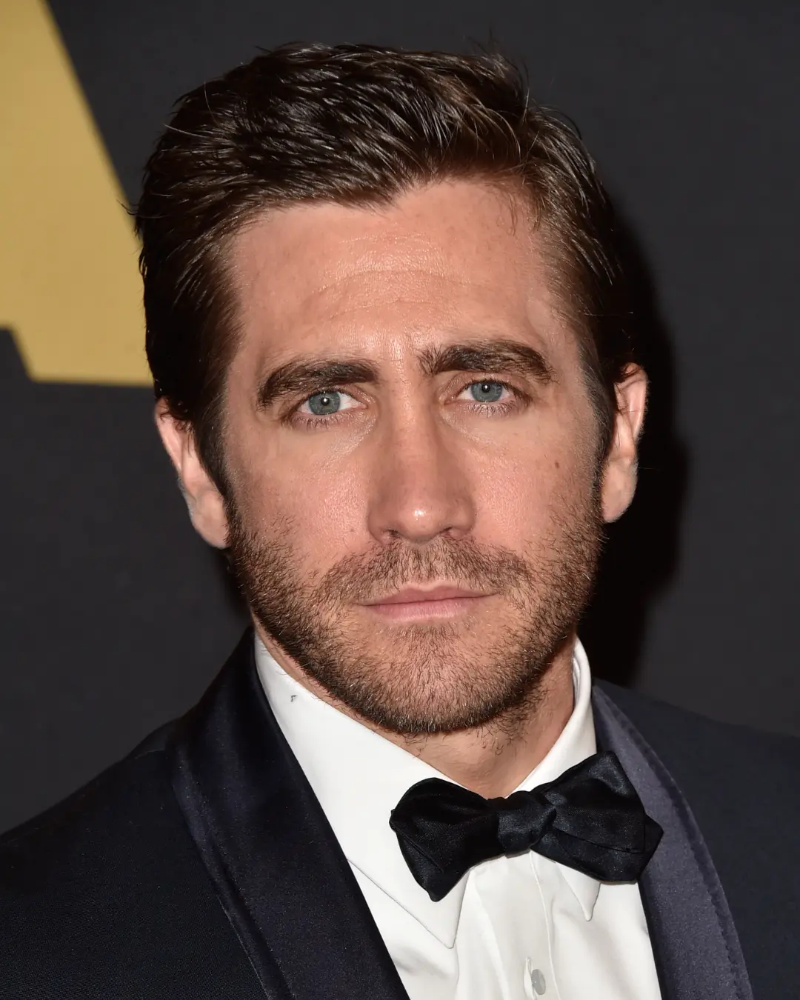

And yes, the capitalisation there was very intentional.
Someone on Twitter found this easter egg in Taylor Swift's Lover Music Video and noticed that each section of the "Lover House" represents a different era.
Now the Lover House has become synonymous with Taylor Swift's eras.
13
13 is Taylor Swift's lucky number.
Wanna know why?
WELL Here's a video if you hate reading.
BUT IF YOU ENJOY READING!! HERE'S THE REASON!
Her first song that ever went number 1 had a 13 second intro
Every time she's ever won an award at an awards show, she's been seated in row 13 or row M (The 13th Letter)
A truck goes by and it has a 13 on it, that means good luck is to come for that night
Her album release of Midnights was on the 21st of October (2 + 1 + 10 = 13). Midnights has brought plentiful luck!
Swifties
What are Swifties?
Well
Swifties are the name for Taylor Swift fans.
If you are a Taylor Swift fan, you can be considered a Swiftie.
The Swifties will quite honestly do anything for Taylor Swift
And, I need to emphasise, don't mess with the swifties.
I don't think I made it clear, the swifties are the reason that All Too Well (10 Minute Version) exists,
and we will cancel this man
I don't think you have any idea WHAT HE DID
Evil
What is "Taylor's Version"
Written By AI
Taylor Swift is re-recording her first six albums in order to regain control of her music after the rights to her original recordings were sold without her permission. She co-wrote every single song she's ever released, yet she does not own the songs on her first six records, which means that she has no say in how and where the music is used.
After more failed attempts to buy back the masters from Scooter Braun and Shamrock Holdings, Swift decided to begin re-recording her first six albums - releasing them under their original names and the parenthesis “Taylor's version”.
Taylor's decision to re-record her albums comes down to the simple fact that she wants to own the rights to the music that she wrote and recorded 1. She hopes that by re-recording her songs, she can override those archival works with these new versions.
Who We Hate
We hate the following:

This is John Mayer, Jake Gylenhaal, Scooter Braun, and Kanye West, as well as the company ticketmaster.
These people and ticketmaster are disgusting and have done unspeakable things.
Buuuuuuuuuuut, ticketmaster did something so bad that I don't care, I will speak about it.
Miss Americana is a documentary that follows Taylor Swift over the course of several years of her career.
Released on the 31st of January 2020, released less than 6 months after she released her album "Lover".
It is named after track 7 on Lover: Miss Americana & The Heartbreak Prince.
It has been described as an "unvarnished and emotionally revealing look into Taylor Swift's life", it's shows a time where she starts to harness the power of her voice.
Along with this documentary, Taylor Swift also released a political song called "Only The Young" for this movie.
I truly do recommend it.
You can watch it on Netflix here.

 Now the Lover House has become synonymous with Taylor Swift's eras.
Now the Lover House has become synonymous with Taylor Swift's eras.